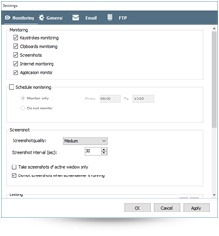
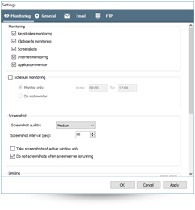

#1 Monitoring Software for Windows
Windows Keylogger is the best keylogger software which reports you about the activities your children and employees do when using computer and internet.
Windows Keylogger Features
| Feature | Free Version $0 | Pro Version $49 / $79 |
|---|---|---|
| Keystroke Logging | ✓ | ✓ |
| Clipboard Monitoring | ✗ | ✓ |
| Application Tracking | ✗ | ✓ |
Windows Keylogger Screenshots


 
